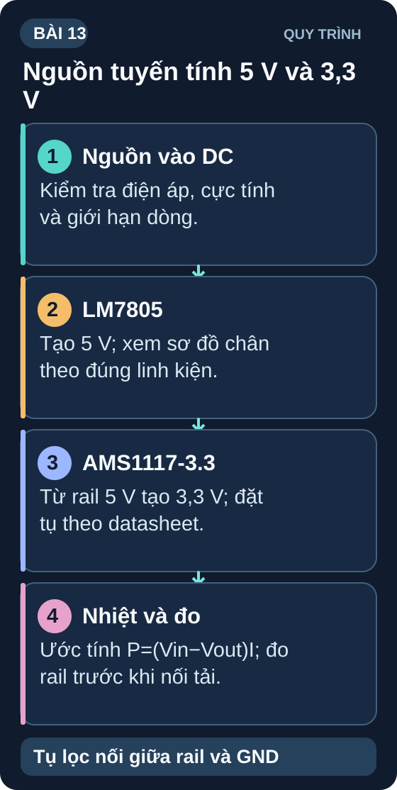

Nguồn DC & IC Ổn Áp LDO
Từ adapter thô đến nguồn DC chuẩn — thiết kế mạch nguồn với IC LDO cho mọi dự án vi điều khiển.
- Hiểu tại sao cần IC ổn áp — adapter không phải nguồn DC lý tưởng
- Phân biệt ổn áp tuyến tính (LDO) và ổn áp chuyển mạch (switching)
- Đọc và hiểu datasheet IC LM7805 và AMS1117-3.3
- Thiết kế mạch nguồn 5V và 3,3V theo datasheet
- Hiểu dropout voltage và tại sao LDO quan trọng với nguồn pin
- Tính công suất tiêu tán nhiệt của IC LDO
- Lắp mạch nguồn 5V và 3,3V thực tế, đo kiểm chất lượng
- So sánh hiệu suất LDO vs buck converter

Dụng cụ và linh kiện
| Tên | Thông số | SL |
|---|---|---|
| IC LM7805 | TO-220, ổn áp 5V/1A (input 7–35V) | 1 |
| IC AMS1117-3.3 | SOT-223 hoặc TO-252, LDO 3,3V/800mA | 1 |
| Tụ điện 100µF/25V (electrolytic) | Tụ lọc đầu vào và đầu ra | 4 |
| Tụ gốm 100nF | Decoupling | 4 |
| Adapter 9V DC hoặc 12V DC | Nguồn vào — KHÔNG dùng 220V trực tiếp | 1 |
| LED + R hạn dòng | Test tải | 2 |
| Breadboard + multimeter | — | 1 bộ |
1. Tại sao adapter 5V không phải nguồn DC lý tưởng?
Adapter điện (đặc biệt loại rẻ) có thể cho ra điện áp thực tế dao động 4,5V–5,5V tùy tải, có nhiễu AC (ripple), và thay đổi theo nhiệt độ. Vi điều khiển (ESP32, STM32) nhạy cảm với ripple nguồn — có thể gây lỗi ADC, reset ngẫu nhiên, và noise trong tín hiệu analog.
IC ổn áp (voltage regulator) nhận điện áp vào thô và xuất ra điện áp chính xác, ổn định, ít ripple hơn nhiều. Đây là khối thiết kế cơ bản trong mọi thiết bị điện tử.
2. LDO vs Switching Regulator
| Đặc tính | LDO (tuyến tính) | Buck Converter (chuyển mạch) |
|---|---|---|
| Nguyên lý | Tiêu tán phần thừa thành nhiệt | Chuyển đổi năng lượng qua L, C |
| Hiệu suất | Thấp: η = V_out/V_in (ví dụ: 5V từ 12V = 42%) | Cao: 80–95% |
| Ripple đầu ra | Rất thấp (µV) | Cao hơn (mV–10s mV) |
| Độ phức tạp | Đơn giản — 3 chân + 2 tụ | Phức tạp hơn — cần L, C, feedback |
| Nhiệt lượng | Nóng khi V_in–V_out lớn hoặc dòng lớn | Ít nóng hơn |
| Dùng khi | Dòng < 1A, V_in–V_out nhỏ, cần nhiễu thấp | Dòng lớn, V_in–V_out lớn, pin |
3. IC LM7805 — Ổn áp 5V cổ điển
| Thông số | Giá trị | Ý nghĩa |
|---|---|---|
| V_in tối thiểu | 7V | Cần ít nhất 7V để ổn định ra 5V |
| V_in tối đa | 35V | Không vượt quá 35V |
| Dropout voltage | 2V | V_in phải lớn hơn V_out ít nhất 2V |
| I_out tối đa | 1A (1,5A peak) | Cần tản nhiệt nếu dùng gần giới hạn |
| Độ chính xác | ±4% | V_out = 4,80V–5,20V |
3.1 Tính công suất tiêu tán nhiệt
Ví dụ: LM7805, V_in=12V, I_out=500mA
P_heat = (12–5) × 0,5 = 7 × 0,5 = 3,5W — IC sẽ rất nóng, cần tản nhiệt (heatsink)!
Ước tính nhiệt độ mối nối: T_j ≈ T_ambient + P_heat × R_θJA của cả IC và tản nhiệt đã lắp. Chỉ thay số sau khi tra datasheet và thông số tản nhiệt thực tế; không mặc định R_θJA = 5°C/W. Ở 3,5 W, phải kiểm tra nhiệt độ mối nối cho phép và dùng tản nhiệt phù hợp.
4. IC AMS1117-3.3 — LDO 3,3V cho ESP32/Arduino
AMS1117-3.3 có thể chạy từ 4,5V input → rất phù hợp với USB 5V (thực tế 4,7–5,2V). Dropout chỉ 1,2V → chỉ cần 4,5V là đủ ra 3,3V. LM7805 cần 7V để ra 5V → không dùng được với USB. AMS1117 được dùng trong hầu hết board ESP32, Arduino có chân 3,3V.
5. Thực hành: Lắp mạch nguồn 5V và 3,3V
Mạch 5V (LM7805): Khi chưa cấp điện, nối 9 V vào chân 1=IN, chân 2=GND, lấy 5 V ở chân 3=OUT. C_in (100µF và 100nF song song) nối giữa IN–GND; C_out nối giữa OUT–GND, đúng cực tụ hóa. Đo OUT so với GND.
Mạch 3,3V (AMS1117): Nối rail 5 V vào chân 3=IN; chân 1=GND; lấy 3,3 V ở chân 2/tab=OUT. C_in nối IN–GND; với IC AMS1117 của Advanced Monolithic Systems, dùng C_out 22 µF tantalum OUT–GND sát IC theo datasheet. Nếu dùng mã khác, tra lại loại tụ và giá trị của chính mã đó. Không đặt tụ nối tiếp rail.
Test tải nhẹ: Nối LED và điện trở riêng vào từng đầu ra. Đo điện áp không tải và có tải, ghi lại độ lệch; đối chiếu giới hạn datasheet thay vì mặc định một ngưỡng chung.
Đo ripple (nếu có oscilloscope): Dùng đầu dò và dây GND ngắn, ghi biên độ gợn thực tế ở tải đang thử; phụ thuộc nguồn, tụ, tải và cách đo.
Kiểm tra nhiệt: Chỉ tăng tải sau khi tính công suất và chọn tản nhiệt. Dùng nhiệt kế để đo thân/tản nhiệt, ngắt nguồn trước khi thay tải; không chạm tay vào IC đang hoạt động vì có thể bỏng.
1: P_heat = (9–5)×0,3 = 1,2W. T_IC = 25 + 1,2×50 = 25+60 = 85°C. Gần giới hạn an toàn (125°C max) — nên thêm tản nhiệt nhỏ để dự phòng.
2: P_heat ≈ (5–3,3)×0,5 = 0,85 W. Đây là sụt áp trên IC, không phải “dropout”; dropout tối thiểu là thông số khác. SOT-223 vẫn có thể rất nóng ở 0,85 W: kiểm tra R_θJA theo diện tích đồng PCB, nhiệt độ môi trường và giới hạn T_j trước khi quyết định có cần tản nhiệt hoặc giảm tải.
3: 3,3V/2A = 6,6W tải. Nếu V_in=5V: P_heat = (5–3,3)×2 = 3,4W → IC nóng, cần tản nhiệt lớn. Dùng buck converter (MP2307, AP62150...) — hiệu suất 90%+, ít nhiệt, phù hợp 2A.
4: Tụ 100µF phản ứng chậm với dòng đột ngột (tần số cao). Tụ 100nF gốm phản ứng rất nhanh với transient tần số cao (MHz). Cả hai cùng nhau: 100µF xử lý ripple thấp tần, 100nF lọc nhiễu cao tần → điện áp ra sạch ở mọi tần số.